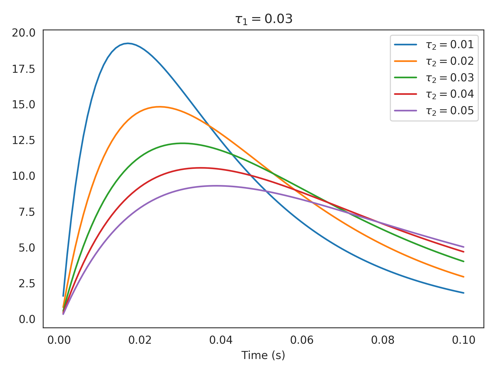

nengolib.DoubleExp¶
-
nengolib.synapses.DoubleExp(tau1, tau2)[source]¶ A second-order lowpass:
1/((tau1*s + 1)*(tau2*s + 1)).Equivalent to convolving two lowpass synapses together with potentially different time-constants, in either order.
Parameters: tau1 :
floatTime-constant of one exponential decay.
tau2 :
floatTime-constant of another exponential decay.
Returns: Second-order lowpass with potentially different time-constants.
Examples
>>> from nengolib import DoubleExp >>> import matplotlib.pyplot as plt >>> tau1 = .03 >>> taus = np.linspace(.01, .05, 5) >>> plt.title(r"$\tau_1=%s$" % tau1) >>> for tau2 in taus: >>> sys = DoubleExp(tau1, tau2) >>> plt.plot(sys.ntrange(100), sys.impulse(100), >>> label=r"$\tau_2=%s$" % tau2) >>> plt.xlabel("Time (s)") >>> plt.legend() >>> plt.show()
